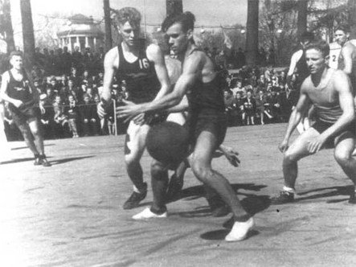

Basketball
Родиной баскетбола являются Соединенные Штаты Америки. Игра была придумана в 1891 году в учебном центре Христианской молодежной ассоциации в Спрингфилде, штат Массачусетс. ... Он прикрепил к перилам балкона две фруктовые корзины без дна, в которые нужно было забрасывать футбольный мяч (basket - корзина, boll - мяч).
В двадцатые годы начинают активно создаваться национальные федерации баскетбола, проводятся первые международные встречи. Так в 1919г. состоялся баскетбольный турнир между армейскими командами США, Италии и Франции. В 1923г. во Франции проводится первый международный женский турнир. Участие в нем приняли команды трех стран: Англии, Италии, США.
Игра завоевывает все большую популярность и признание в мире, и в 1932г. была создана Международная федерация баскетбола (FIBA). В ее первом составе 8 стран - Аргентина, Греция, Италия, Латвия, Португалия, Румыния, Швеция, Чехословакия. В 1935 году Международный Олимпийский Комитет вынес решение о признании баскетбола олимпийским видом спорта. В 1936г. на Олимпийских играх в Берлине в программе появился баскетбол. Почетным гостем игр был Д. Нейсмит - создатель этой игры. В баскетбольном турнире участвовали команды 21 страны. Матчи проводились на открытых теннисных площадках. Во время этой Олимпиады состоялся первый конгресс ФИБА, где были рассмотрены существующие и приняты единые междудународные правила игры.


В начале XX века в США стали формироваться первые профессиональные команды. Существовали даже так называемые «гастрольные» команды, которые успевали за год отыграть по 200 матчей по всей стране. Самые известные из них: «Ориджинал Селтикс», «Нью-Йорк Ренессанс» и «Гарлем Глобтроттерс». Выставочная команда «Гарлем Глобтроттерс» существует и по сей день и в качестве «послов доброй воли» от США выступает по всему миру.
Профессиональный баскетбол появился в 1935 году вместе с учреждением Среднезападной баскетбольной конференции. Через два года организация выросла в Национальную баскетбольную лигу (НБЛ), которую финансировали корпорации General Electric, Firestone и Goodyear. Изначально в НБЛ было 13 корпоративных команд, но позднее она разрослась до 38 клубов. В 1946 году появилась Баскетбольная ассоциация Америки (БAA), объединившая 16 команд. В 1949 году НБЛ и БАА объединились, сформировав самую популярную баскетбольную лигу современности – Национальную баскетбольную ассоциацию (НБА).